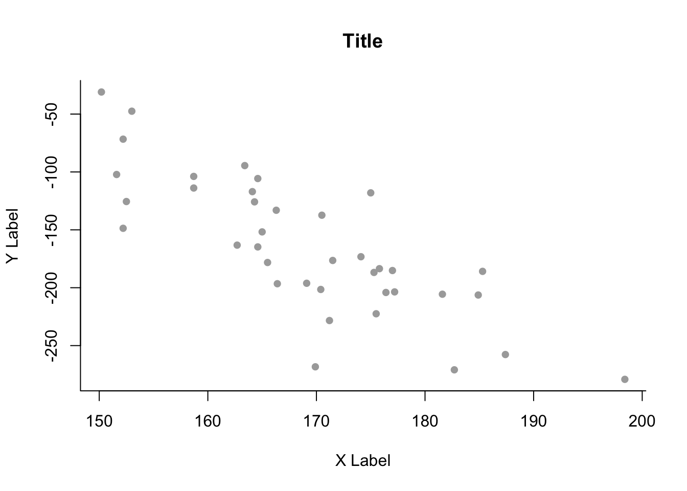

Chapter 6 Non-Linear Models
6.1 Polynomial Regression
Building a Polynomial Regression Model (One Variable)
Following practical demonstration 8.3 we build a model for Boston dataset in library(MASS) which has no missing data.
For convenience, we can rename the response and predictor variable y and x respectively, and label axes for plotting. Below is then a basic plot of response against predictor.
y = Boston$medv
x = Boston$lstat
y.lab = 'Median Property Value'
x.lab = 'Lower Status (%)'plot( x, y, cex.lab = 1.1, col="darkgrey", xlab = x.lab, ylab = y.lab,
main = "", bty = 'l' )
Polynomial Regression Function
Polynomial regression can be called by writing out the predictors directly (poly2 = lm( y ~ x + I(x^2) )), or using the poly() command.
poly2 = lm(y ~ poly(x, 2, raw = TRUE)) #2 is the degree
#summary(poly2)Here, raw = TRUE calculates the polynomial regression as usual. Leaving this out so default is raw = FALSE would lead to an orthogonal basis being chosen to perform the regression on.
Plotting Simple Polynomial Regression
First, we mus sort the \(x\) values for the plot to work. We use each initial \(x\) data point as a point we connect between to draw the polynomial.
sort.x = sort(x)
pred2 = predict(poly2, newdata = list(x = sort.x), se = TRUE)
names(pred2)## [1] "fit" "se.fit" "df" "residual.scale"pred2 contains fit which are the fitted values and se.fit which are the standard errors at each fitted point.
se.bands2 = cbind( pred2$fit - 2 * pred2$se.fit,
pred2$fit + 2 * pred2$se.fit )Final Plot
plot(x, y, cex.lab = 1.1, col="darkgrey", xlab = x.lab, ylab = y.lab,
main = "Degree-2 polynomial", bty = 'l')
lines(sort.x, pred2$fit, lwd = 2, col = "red")
matlines(sort.x, se.bands2, lwd = 1.4, col = "red", lty = 3)
Polynomial Regression (Higher Degrees)
poly3 = lm(y ~ poly(x, 3))
poly4 = lm(y ~ poly(x, 4))
poly5 = lm(y ~ poly(x, 5))
pred3 = predict(poly3, newdata = list(x = sort.x), se = TRUE)
pred4 = predict(poly4, newdata = list(x = sort.x), se = TRUE)
pred5 = predict(poly5, newdata = list(x = sort.x), se = TRUE)
se.bands3 = cbind(pred3$fit + 2*pred3$se.fit, pred3$fit-2*pred3$se.fit)
se.bands4 = cbind(pred4$fit + 2*pred4$se.fit, pred4$fit-2*pred4$se.fit)
se.bands5 = cbind(pred5$fit + 2*pred5$se.fit, pred5$fit-2*pred5$se.fit)
par(mfrow = c(2,2))
# Degree-2
plot(x, y, cex.lab = 1.1, col="darkgrey", xlab = x.lab, ylab = y.lab,
main = "Degree-2 polynomial", bty = 'l')
lines(sort.x, pred2$fit, lwd = 2, col = "red")
matlines(sort.x, se.bands2, lwd = 2, col = "red", lty = 3)
# Degree-3
plot(x, y, cex.lab = 1.1, col="darkgrey", xlab = x.lab, ylab = y.lab,
main = "Degree-3 polynomial", bty = 'l')
lines(sort.x, pred3$fit, lwd = 2, col = "darkviolet")
matlines(sort.x, se.bands3, lwd = 2, col = "darkviolet", lty = 3)
# Degree-4
plot(x, y, cex.lab = 1.1, col="darkgrey", xlab = x.lab, ylab = y.lab,
main = "Degree-4 polynomial", bty = 'l')
lines(sort.x, pred4$fit, lwd = 2, col = "blue")
matlines(sort.x, se.bands4, lwd = 2, col = "blue", lty = 3)
# Degree-5
plot(x, y, cex.lab = 1.1, col="darkgrey", xlab = x.lab, ylab = y.lab,
main = "Degree-5 polynomial", bty = 'l')
lines(sort.x, pred5$fit, lwd = 2, col = "black")
matlines(sort.x, se.bands5, lwd = 2, col = "black", lty = 3)